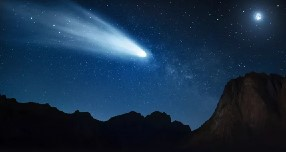
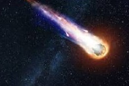

COMETA
Cometas são pequenos corpos celestes que orbitam o Sol, formados por gelo e poeira. Os cometas apresentam uma estrutura composta por um núcleo sólido, uma nuvem de poeira e gases ao seu redor, chamada coma, e uma longa cauda brilhante que confere a esse objeto seu aspecto característico. Eles são constituídos por materiais que datam do princípio da formação do Sistema Solar, há 4,6 bilhões de anos, e podem realizar órbita periódica ou não periódica em torno dessa estrela. O Halley é um dos cometas mais conhecidos do mundo e pode ser observado a partir da superfície terrestre a cada 76 anos.
CARACTERÍSTICAS
Os cometas são corpos celestes de pequena dimensão, quando comparados aos demais integrantes do Sistema Solar, e formam um grande conjunto de objetos orbitando o Sol. De acordo com as informações fornecidas pela Nasa (Administração Nacional da Aeronáutica e Espaço, em inglês), existem, até o momento, 3.881 desses objetos viajando pelo Sistema Solar. A estrutura dos cometas é semelhante, formada por um núcleo, o coma e a cauda.
Os cometas são corpos celestes de pequena dimensão, quando comparados aos demais integrantes do Sistema Solar, e formam um grande conjunto de objetos orbitando o Sol. De acordo com as informações fornecidas pela Nasa (Administração Nacional da Aeronáutica e Espaço, em inglês), existem, até o momento, 3.881 desses objetos viajando pelo Sistema Solar. A estrutura dos cometas é semelhante, formada por um núcleo, o coma e a cauda.
Coma: camada gasosa formada ao redor do núcleo através do processo de sublimação. Os materiais integrantes do coma são oxigênio, hidrogênio e, principalmente, água. Ao redor do coma existe um envólucro de hidrogênio que se torna cada vez mais extenso à medida que o cometa se aproxima do Sol. Cauda: estrutura alongada formada por gás ou poeira que fica localizada na parte posterior do cometa e com extensão variável que chega a milhões de quilômetros. A cauda de um cometa aponta sempre na direção oposta ao Sol.
Importância
Os cometas são importantes porque são formados de materiais oriundos dos primórdios do Sistema Solar, mais precisamente de quando a estrela desse conjunto, o Sol, teve origem. Assim, esses pequenos corpos celestes carregam evidências importantes da formação do Sistema Solar e da parte conhecida do Universo. Além disso, acredita-se que compostos fundamentais para a existência da vida na Terra foram introduzidos no nosso planeta através dos cometas, como compostos orgânicos e água|2|.
Curiosidades
- Os cometas são conhecidos pela sua formação de cauda, composta por gases e poeira cósmica, interagindo com a luminosidade da luz solar. A origem dos cometas está especialmente atrelada ao Cinturão de Kuiper e à Nuvem de Oort. Essas duas regiões do espaço sideral reúnem diversos corpos celestes de diferentes tamanhos.